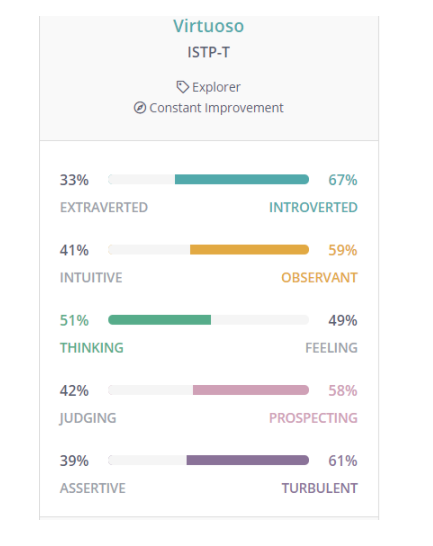

S3346071
Hey there, thanks for stopping by. My name is Yury, I live in Melbourne however I originally come from Moscow, Russia. I also spent some time living in Vietnam which resulted in me picking up 3 languages in the process.
I completed Year 12 back in 2010, since then I've worked mostly in the Logistics and Transport industry in various roles. I am currently undertaking 2 introductory at RMIT. My goal is to continue my formal education by completing a Bachelor of Information Technology. I also hope to gain employment during or after graduating in the field of web development.
As for hobbies, I used to spend a lot of time riding motorbikes. I like working out in my gym and keeping healthy overall. I like being outdoors whether it is just a simple walk or driving out for camping. Having said that you could also find me spending a lot of time indoors playing games, browsing the web and learning how to code.
I am interested in IT due to its disruptive nature and how it has significantly altered many aspects of our lives. I have witnessed how the way we work, study, commute and socialize, to name a few, are becoming increasingly convenient and efficient.
In 2017 I took a career break and went back to Russia. I spent a year working in the sales department for a cloud backup company there and got to know different aspects of the IT profession. I spoke to developers there and had an opportunity to see what their average day is like as well as their duties and tasks. After that experience I decided to switch my careers.
In my spare time I taught myself web development and fundamentals of Object-oriented programming. I completed a couple of courses on HTML and CSS. I am also currently undertaking an online Javascript course. I find it fascinating adding interactivity to my websites, giving its visitors a complete new experience and feel. I still have a long journey ahead of me as I continue to hone my web development skills.
By committing to a technology profession I am hoping to take part in this transformation, position myself well in the job market and give me more flexibility whether it’s work hours or location.
I chose to study at RMIT because it offers a flexible online curriculum. As a mature student I am able to study while keeping up with my other commitments such as work.I found my subjects very useful so far, I have learned a lot in the past few weeks. This includes coding using Java and topics related to ethics, working in a team and how to do better presentations.
I expect to continue to gain more knowledge about Java and object oriented programming. I am also looking forward to expanding my knowledge about databases next year when I take the Database concepts unit, code: RMI-CPT140-2020.
My ideal job is to become a full stack web developer. However I do understand I will need to first gain experience as a front-end web developer first, then transition to back end and only then apply for positions that seek a professional that has experience in both front and back ends.However I would first need to work towards getting a junior position in front-end web development.
A Junior front-end developer requires skills in HTML, CSS, and Javascript. I am planning to acquire these skills by learning on the web through resources such as Udemy, Scrimba and Youtube. To further solidify my skills, I am planning to take Web programming and further web programming via RMIT that are part of the Bachelors of Information Technology. For the back-end I am planning to take the Web development technologies unit via RMIT as well. This unit covers C# and architectural understanding of ASP.NET
Let’s have a look at a few job advertisements. What sort of skills are the employers looking for?
This employer also seeks people with knowledge of the Adobe Suite.
LinkThis job advertisement gives me an idea about what Javascript library to learn, in this case it is JQuery.
LinkThis junior web developer role is looking for graduates with no specific stack knowledge, a great opportunity for people that are just starting out.
LinkThis junior web developer role is looking for graduates with no specific stack knowledge, a great opportunity for people that are just starting out.
LinkThis junior web developer role is looking for graduates with no specific stack knowledge, a great opportunity for people that are just starting out.
LinkIn this ad the employer specifically defines which front end and back ends technologies the applicant needs to know which is handy.
LinkThe tests showed I belong to the ISTP personality type.
ISTP People of ISTP personality type like to work and solve problems by troubleshooting and through hands on experiences. They don’t like to dwell on theory and prefer doing things that are tangible and realistic. ISTP individuals are very curious and excellent mechanics and engineers.
Due to the inclusive nature of the ISTP individuals and their inherent ability to work on technical aspects of a project. In the group environment I believe I can take a role covering technological issues such as software development, web development, systems engineering etc.
Also due to ISTP individuals innate nature to work by themselves, working in a group might be challenging. I am planning to tackle the issue by stepping out of my comfort zone. I am also planning to speak about my personality type with my colleagues and letting them know I do need some space in order to focus and work well. Communication is key here. It is also worth noting that ISTP individuals are very easy going and work well under pressure, which makes us very valuable people in a team environment.
I want to develop a video game that captures the life of a fictional soviet bloc dystopian society riddled with totalitarianism and mass surveillance. As my goal, as a game developer, is to immerse the player visually and emotionally in the game’s surroundings, the game will feature 3D graphics. The game will have simple game mechanics with an emphasis on game art and game design.
Looking at the past projects of the same genre, one that stands out the most is a video game by Lucas Pope called Paper’s Please. From 2013 to 2016 the game has sold 1.8 million copies. There is a market for this type of genre and a genuine appreciation by the public since this game has won 9 awards.
Another example is a video game called Beholder by Warm Lamp games. This game is also about a totalitarian state where the player has a choice to either work with the government or side with the people. The game has over 12,000 positive reviews on Steam.
The main character in this game works on a train station during winter as a customs officer. The game play revolves around the player boarding incoming trains and processing people in the train compartments, stamping passports and checking the passengers for any suspicious behaviour and contraband. The player will also be required to check incoming cargo trains as well. The gameplay will feature simple mouse click and drag mechanics with the ability of the player to use arrow keys to move around the compartments.
The game will be developed using Unity engine and C#. Unity asset store sells a variety of 3D models that can be purchased to speed up the development.
For example:
Buildings and rail lines:
Link 1More buildings:
Link 2Low polygon trains:
Link 3Low polygon winter style town:
Link 4The skills required will be detailed knowledge of Unity Engine and C#. Unity engine is free to use while C# is widely used and has a lot of learning references online. My pathway will start with first learning C#, I am interested in taking the following course to start with.:
Learn C#Followed by:
This courseWhich goes over creation of a 2D platformer game using C# and Unity.
After I am planning to enroll in a 3D unity course, which covers both 3D game development and C#.
3D Unity course This course covers the below topics:
The successful outcome would be the receptive nature of the game community. The absence of any bugs, unique and appealing graphics. Atmospheric gameplay and good optimization. Interactive puzzles that draw in the player. This can be done by releasing a demo version of the game first and letting the game community test the game. The game will also need to be released in time. My planned development time is 12 months.
"Career Paths | Virtuoso (ISTP) Personality | 16Personalities", 16Personalities, 2020. [Online]. Available: https://www.16personalities.com/istp-careers. [Accessed: 20- Sep- 2020]
"I’m a ‘Crafter’ – What Careers and Majors Work Well with Your Personality Type?", Bsu.edu, 2020. [Online]. Available: https://www.bsu.edu/about/administrativeoffices/careercenter/tools-resources/personality-types/istp#accordion_careers. [Accessed: 20- Sep- 2020]
"The Ultimate Guide to Unity Games Development", Udemy, 2020. [Online]. Available: https://www.udemy.com/course/the-ultimate-guide-to-game-development-with-unity/. [Accessed: 20- Sep- 2020]